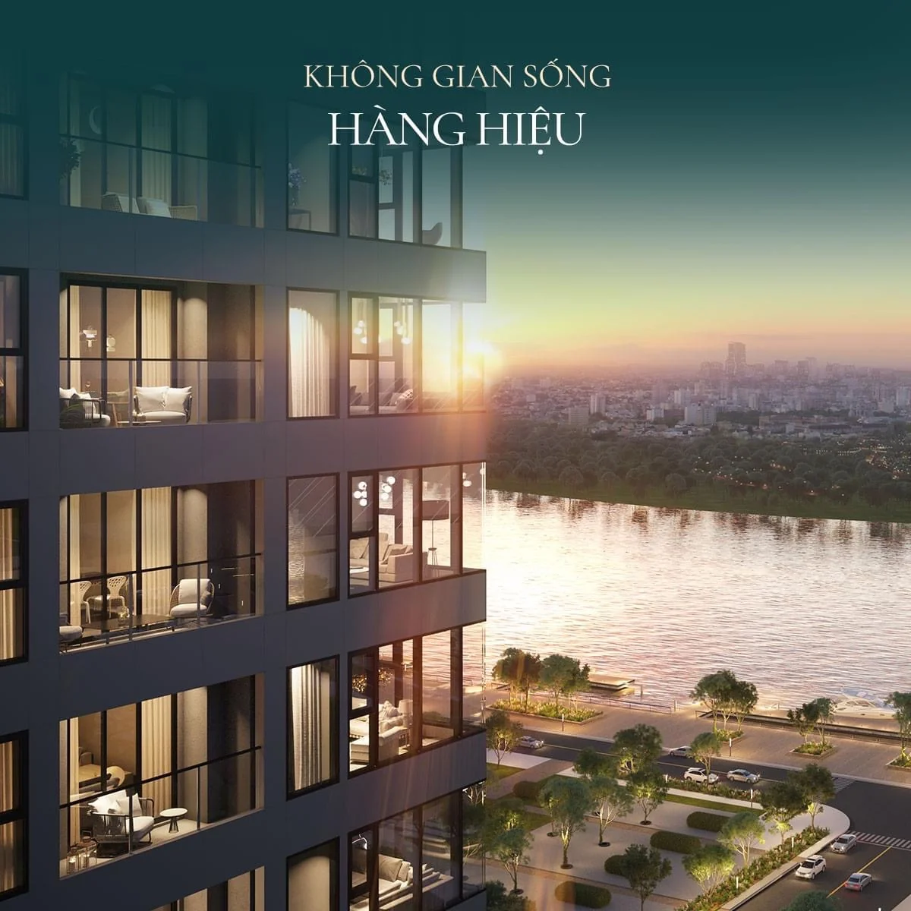

高級物件の購入者が口には出さなくても常に気にかけている問いのひとつが、「隣人はどんな人になるのか?」です。ブランデッドレジデンスという分野において — グランドマリーナ・サイゴンはベトナム初のマリオット & JW マリオット ブランデッドレジデンスで、1区バーソン(Ba Son)のサイゴン川リバーフロントに位置します — この問いはいっそう重要になります。ここでの入居者コミュニティは偶然に形成されるものではありません。価格、マリオットのサービス基準、そして特定の層の住民のために設計された共用の社交空間によって、自然に「フィルタリング」されているのです。
グランドマリーナにはどんな人が住んでいる?
グランドマリーナの入居者は、主にベトナムの経営者や上級エグゼクティブ、富裕層のご家族、そしてプライベートさとホテル並みのサービスを兼ね備えた住まいを求める国際的なプロフェッショナルです。
本プロジェクトは1区のまさに中心 — バーソン(Ba Son)メトロ駅から約 250m、サイゴン川からわずか 200m — に位置しているため、入居者の層はいくつかの明確なグループに分かれます。
- オフィスや商談拠点に近い中心地の住所を求める、ベトナムの起業家・経営者。
- 近距離に一流のインターナショナルスクール(BIS、ISSP、AIS)や質の高い病院がある、安全な住まいを必要とする富裕層のご家族。
- ホーチミン市で働く国際的なプロフェッショナルや多国籍企業のエグゼクティブで、他都市ですでにブランデッドレジデンス住まいに慣れている方々。
- 賃貸目的で購入し、同様のハイエンドな入居者層をターゲットとする投資家。
価格帯とマリオットの運営基準がすでにこのセグメントを定義づけているため、ここの入居者は似通ったライフスタイルとサービスへの期待を共有する傾向にあります。これは、多くの超富裕層の購入者が高く評価するポイントです。投資家の視点にご興味があれば、記事「グランドマリーナには誰が借りる? 1区の入居テナント像」で実際のテナント層をより詳しく解説しています。

ブランデッドレジデンスで「隣人」がなぜ重要なのか?
ブランデッドレジデンスでは、入居者コミュニティそのものが資産価値の一部です。同じような立場の住民同士であることが、住環境の水準やセキュリティ、さらには住まいの流動性(売りやすさ)の維持にもつながります。
ナイトフランク(Knight Frank)やサヴィルズ(Savills)といった調査会社によれば(2023〜2025年)、世界的にブランデッドレジデンスは、運営品質と安定した入居者基盤も一因となり、同等のノンブランド物件と比べて概ね 25〜35% 高い価格で取引される傾向があります。これはあくまで市場の参考値であり、特定のプロジェクトについての保証ではありません。実際の結果は、タイミング、個別の物件、政策などによって左右されます。
まとまりのある入居者コミュニティは、いくつかの実利的なメリットをもたらします。
- 住民がプライバシーに対して同じ期待を共有するため、セキュリティと静けさが高く保たれます。
- 共用空間が誤用によって過負荷になったり傷んだりせず、その「品格」が保たれます。
- 自然なネットワーク — 起業家やプロフェッショナルである隣人が、ビジネスパートナーや友人になり得ます。
言い換えれば、ここで購入するということは、マリオットというブランドと価格帯がすでに作り上げた「フィルター」をも手に入れることを意味します。ブランド要素がなぜこれほど強く価値とコミュニティを形づくるのかを理解するには、「ブランデッドレジデンスとは?」をお読みください。
コミュニティを形づくる共用の社交空間
グランドマリーナには、スカイラウンジ & ライブラリからシガーラウンジ、ヨットクラブまで、マリオットが運営する一連の共用空間が揃い、入居者だけの特別な集いの場を生み出しています。
これらは、よくある「集会室」のようなものではありません。ブランデッドレジデンスのライフスタイルのために練り上げられた、一連の空間です。
- スカイラウンジ & ライブラリ: 2,000冊以上の蔵書を備えた高層のラウンジ。川を望む静かな環境で、読書や軽い仕事、打ち合わせに最適です。
- シガーラウンジ & ウイスキーバー: 葉巻や上質なお酒を楽しむ住民のためのくつろぎの空間。落ち着いた会話に理想的です。
- ボードルーム & プライベートダイニング: 来客や家族のお祝い、ビジネスパートナーをもてなすための会議室・個室ダイニング。
- ヨットクラブへのアクセス: サイゴン川沿いのリバーサイドマリーナへのアクセス — リバーフロント暮らしの象徴です。
- スカイ・インフィニティプール、テクノジム(Technogym)のフィットネス、スパ & ウェルネス、4K Dolby Atmos シネマルーム: 日常を格上げするアメニティの数々。
これらの空間は、建物を「住民のためのクラブ」へと変えます。隣人はスカイラウンジで出会い、ボードルームで語り合い、シガーラウンジでくつろぐ — こうして次第に選ばれた者同士のネットワークが形づくられていきます。24時間365日体制のマリオット・コンシェルジュチームが、予約やイベント、各空間をホテル基準に保つためのサポートを行います。

グランドマリーナの日常の暮らし
グランドマリーナでの住民の一日は、ホテル並みの利便性を軸に回ります。コンシェルジュが細かなことに対応し、ルームサービスは JW マリオットのキッチンから届き、あらゆるアメニティが同じ建物内に揃っています。
ここでの暮らしは「細かなことに煩わされない」ことで特徴づけられます。マリオットが運営するサービスには、24時間365日のコンシェルジュ、JW マリオットのキッチンによる住戸内ダイニングとルームサービス、ハウスキーピング & ランドリー、バレーパーキング、そしてカード認証と生体認証によるアクセス管理を備えた多層的な24時間セキュリティが含まれます。
住民は マリオット ボンヴォイ(Marriott Bonvoy) の特典も享受できます — 世界8,000軒以上のマリオット系ホテルでのポイントや割引、客室のアップグレード、バケーションクラブへのアクセスなど。小さなお子様のいるご家族には、キッズクラブ、屋外プレイグラウンド、ママ & ベビーラウンジが日々の暮らしを楽にしてくれます。ポディウム(低層部)には、ショッピングアーケード、JW マリオットのシグネチャーレストラン、カフェ/ベーカリー、24時間営業のミニマート、サロンが加わり、ほとんどのニーズが敷地内で完結します。
特筆すべきは、Lake、Lagoon、Cove、Sea の全4タワーがすでに引き渡し済みで、住民が実際に暮らし、マリオット・コンシェルジュが稼働している点です。つまり、これはもはや「計画上」のコミュニティではなく、現に息づいているコミュニティなのです。住戸タイプや間取りを詳しくご覧になりたい方は、「住戸タイプ & 間取り」のページをご覧ください。
タワーごとに異なるコミュニティの色合い
グランドマリーナの4つのタワーは、マリオットと JW マリオットのブランドを冠しつつ住戸構成が異なるため、各タワーの入居者コミュニティにはそれぞれ独自の色合いがあります。
各タワーの入居者層をイメージしていただけるよう、いくつかの特徴を下表にまとめました。
| タワー | ブランド | 主な特徴 | コミュニティの色合い |
|---|---|---|---|
| Lake | Marriott | 47階建て。1〜3ベッドルーム、デュアルキー、ペントハウス、オフィステルと幅広い構成 | ファミリー & 投資家の混在、豊富な広さの選択肢 |
| Lagoon | JW Marriott | アパートメント + オフィステル、「Legacy Collection」 | 実需の入居者に加え、ハイエンドなテナント |
| Cove | JW Marriott | 47階建て。1〜2ベッドルームの「Legacy Suites」が多数、AB Concept によるインテリア | プロフェッショナル & エグゼクティブ、中小規模住戸の比率が高め |
| Sea | JW Marriott | JW マリオットのアパートメント + マリオットのオフィステル | 居住にも短期/長期の賃貸にも柔軟に対応 |
なお、階数、住戸構成、タワーの特徴に関する数値は参考値であり、デベロッパーの公式発表により変更される場合があります。こうした細かな違いこそが、あるバイヤーはダイナミックなプロフェッショナル層を理由に Cove を選び、別のバイヤーは三世代のご家族に適した多様な住戸を理由に Lake を好む、という選択の理由になっています。
コミュニティと賃貸投資の観点
プレミアムで安定した入居者コミュニティは、賃貸をしやすくする「土台」として機能します。まさに求められる質の高いテナント層を引き寄せるからです。
投資家にとって「隣人が誰か」は、単なるライフスタイルの問題ではなく、キャッシュフローの問題です。建物全体が一貫した住環境の水準を目指しているとき、見込みテナント — 通常は国際的なプロフェッショナルや上級エグゼクティブ — は、その環境に対してより安心感を抱きます。現在の参考市場賃料は、1ベッドルームで月あたり概ね 2,500万〜4,000万ベトナムドン、2ベッドルームで 4,000万〜7,000万ベトナムドン、3ベッドルームで 7,000万〜1億2,000万ベトナムドン程度で、参考利回りは年率およそ 3.5〜5% です。これらは変動し得る市場の数値であり、保証ではありません。
外国籍の方で、賃貸に関する権利、税金、手続きを明確にしたい場合は、記事「外国人オーナーの賃貸: 権利・税金・手続き」がたいへん役立ちます。また、賃貸運用と利回りの実務的な仕組みに踏み込みたい方は、「グランドマリーナの住戸を貸し出す: 利回りと手順」をご覧ください。念のためお伝えすると、外国人はここの住戸を50年の期間で所有し(ベトナム法に基づき更新可能)、1棟あたりの外国人所有は30%が上限となっているため、残りの取得可能状況を確認することが不可欠です。
まとめ: あなたが選ぶのは、住まいだけでなくコミュニティ
グランドマリーナで購入することは、マリオット基準のブランデッド・ライフスタイルを備えた、プレミアムで厳選された入居者コミュニティに加わることを意味します — 値付けは難しいものの、確かに実在する価値です。
スカイラウンジ & ライブラリやシガーラウンジからヨットクラブまで、これらの共用空間は単に「美しい」だけではありません。同じような立場の人々を結びつけるのです。そこに24時間365日のマリオットのサービスと、1区中心部のリバーフロントという立地が加われば、プライベートに暮らしながらも明確に定義されたコミュニティに属することのできる、ベトナムでも数少ない住所のひとつとなります。ご決断の前には、入居者像、取得可能状況、価格に関する最新情報を必ずご確認ください — 私たちのチームがいつでもお手伝いします。

ご注意
価格、面積、スケジュールはデベロッパーの公式発表により変更される場合があります。最新の資料と価格表については、Zalo 0903 475 802 までお問い合わせください。